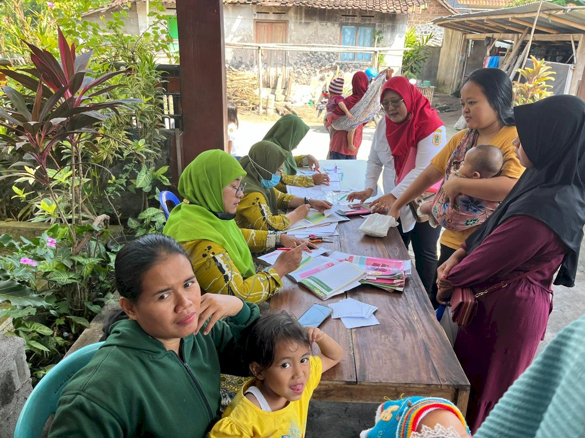

Kel. Jemawan
Kec. Jatinom • Kab. Klaten
Beranda
Profil
Galeri
Unduhan
📸 GALERI FOTO
Galeri
Warga
Foto-foto kegiatan dan potensi Kelurahan Jemawan
🗂️ Semua
🎉 Kegiatan
🏗️ Pembangunan
🌿 Alam & Wisata
🎭 Budaya
Memperingatan HUT RI
Kegiatan Pendamping Usaha Petani
Mengikuti Kirab Budaya Klaten
Pembetukan Koprasi Merah Putih Warga

Posyandu Balita
Renovasi Jalan Desa Jemawan